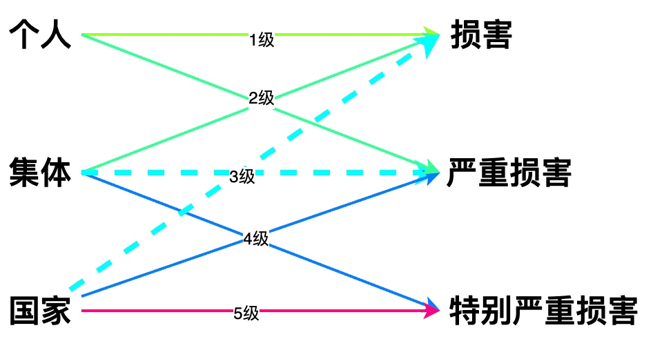
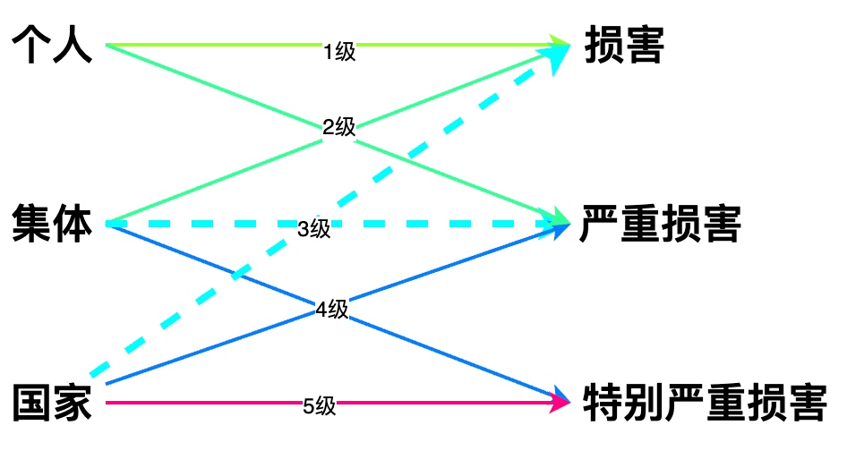
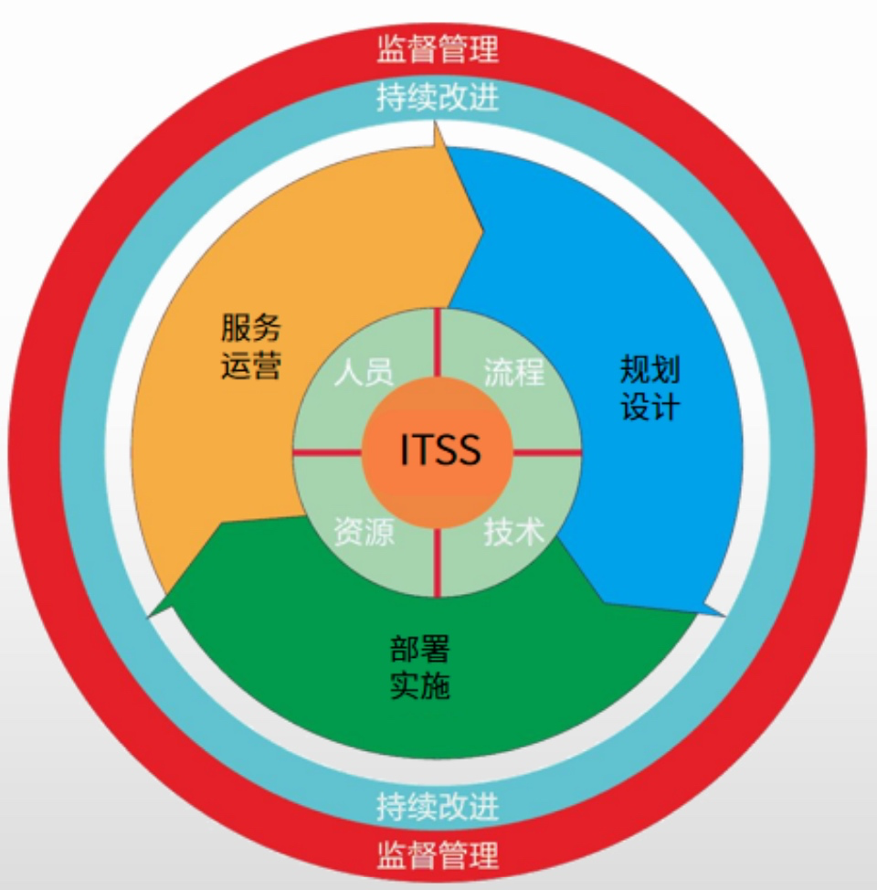
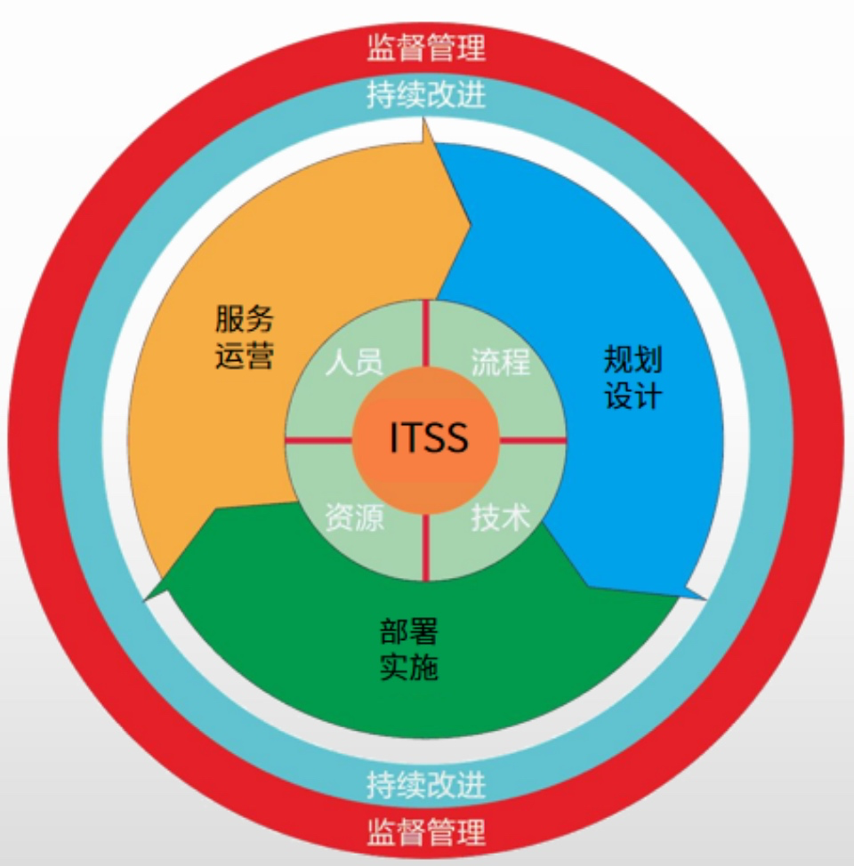

3、信息系统安全、服务管理与规划
信息安全
1
2
3
4
5
6
7
| 强调信息（数据）本身的安全属性，包括
* 秘密性
* 信息不被未授权者知晓
* 完整性
* 信息室正确的、真实的、未被篡改的、完整无缺的
* 可用性
* 信息可以正常使用的
|
信息安全层次
1
2
3
4
5
6
7
8
9
10
11
12
13
14
15
16
17
18
19
| * 设备安全
* 设备的稳定性
* 设备的可靠性
* 设备的可用性
* 数据安全
* 包括秘密性、完整性和可用性，如数据泄露、数据篡改等
* 内容安全
* 信息安全在政治、法律、道德层次上的要求
* 信息内容在政治上是健康的
* 信息内容符合国家的法律法规
* 信息内容符合中华民族优良的道德规范
* 行为安全
* 数据安全本质是一种静态安全，行为安全则是一种动态安全，强调过程安全
* 行为的秘密性
* 行为的过程和结果不能危害数据的秘密性
* 行为的完整性
* 行为的过程和结果不能危害数据的完整性
* 行为的可控性
* 行为的过程出现偏离预期是，能够发现、控制或纠正
|
信息安全等级保护
 

网络安全防御技术
1
2
3
4
5
6
7
8
9
10
11
| * 防火墙
* 静态安全技术
* 入侵检测
* 被动检测
* 入侵防护
* 主动防护
* VPN
* 虚拟专用网络
* 安全扫描
* 网络蜜罐
* 主动防御技术
|
电子政务
1
2
3
4
| * G2G(政府间的电子政务)
* G2B(政府对企业的电子政务)
* G2C(政府对公众的电子政务)
* G2E(政府对公务员)
|
电子商务
1
2
3
4
5
| * B2B（企业和企业）
* B2C（企业和消费者）
* C2C（消费者和消费者）
* O2O（线上和线下）
* 线上购买线下的商品或服务，实体店提货或者享受服务
|
美团外卖属于B2C,美团购买电影票去电影院看电影属于O2O
电子商务的基本特征
1
2
3
4
5
6
| 速记词：普遍整安协
* 普遍性
* 便利性
* 整体性
* 安全性
* 协调下
|
两化融合
1
2
3
4
5
6
7
| * 信息化与工业化发展战略的融合
* 信息资源与材料、能源等工业资源的融合
* 虚拟经济与工业实体经济的融合
* 信息技术与工业技术、IT设备与工业装备的融合
* 主攻方向：智能制造
* 在重点领域试点建设智能工厂，数字化车间
* 充分发挥政府引导作用
|
智能的特点
1
2
3
4
5
6
7
8
| * 具有感知能力
* 感知外部世界获取外部信息的能力
* 具有记忆和思维能力
* 存储感知外部知识以及思维产生的知识，能利用已有知识对信息进行分析、计算、比较、判断联想和决策。
* 具有学习能力和自适应能力
* 通过环境的相互作用，不断学习积累知识，使适应环境变化
* 具有行为决策能力
* 对外界刺激做出反应，形成决策传达相应信息
|
信息系统工程监理内容
1
2
3
4
| 四控三管一协调
四控：进度控制、质量控制、变更控制
三管：合同管理、信息管理、安全管理
一协调：沟通协调
|
ITSS核心要素
ITSS生命周期5阶段
1
2
3
4
5
| * 规划设计
* 部署实施
* 服务运营
* 持续改进
* 监督管理
|
 

信息系统规划工具
1
2
3
4
5
6
| * PERT图
* 甘特图
* 过程/组织（P/O）矩阵
* 资源数据矩阵(R/D)
* 输入-处理-输出图(IPO)
* CU矩阵
|